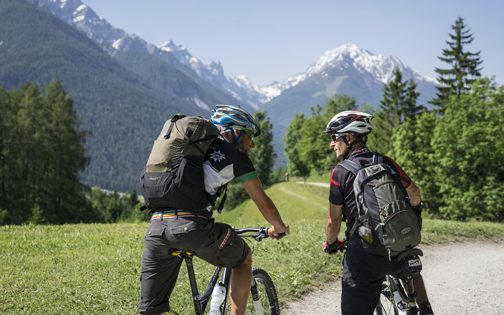
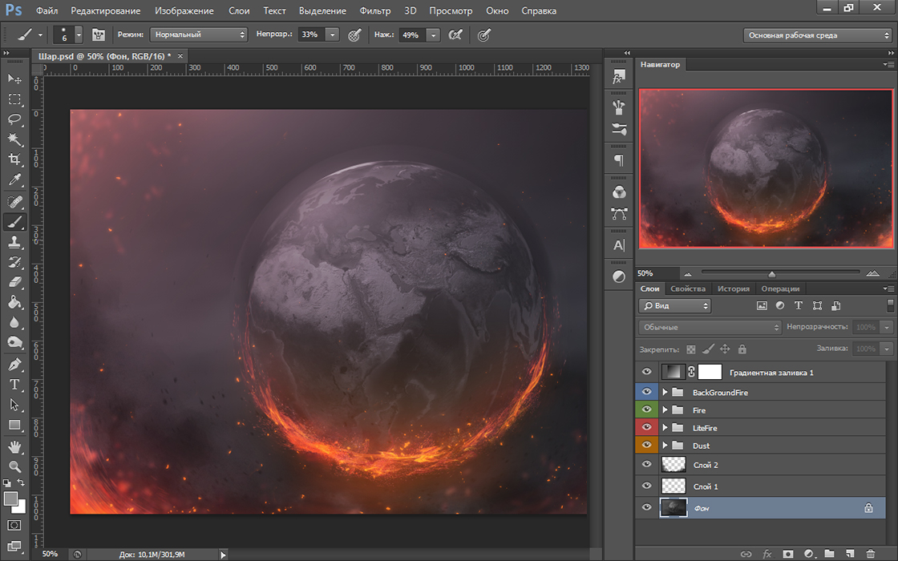
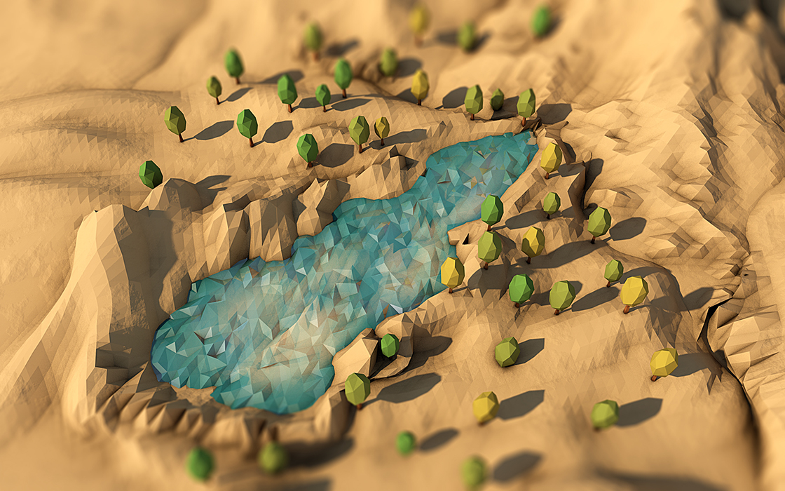
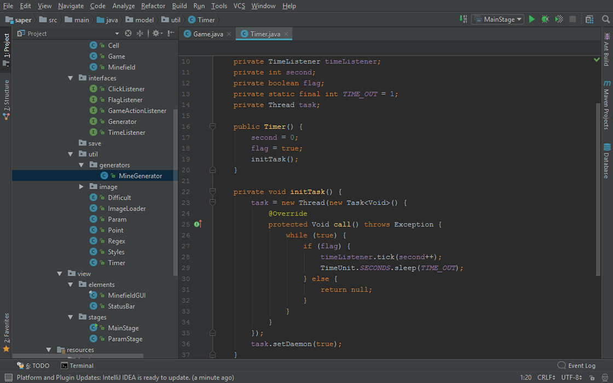

Мои хобби
-
Велотуризм
Велосипедный туризм — один из видов туризма, в котором велосипед служит главным или единственным средством передвижения. Велотуризм и относится как к одному из видов активного отдыха, так и к разновидности спортивного туризма.
Велотуризм как активный отдых заключается в прохождении на велосипеде маршрутов, содержащих общетуристические и специфические для велотуризма объекты экскурсионного характера. Сложность таких походов может колебаться от простой до крайне высокой, маршруты прокладываются так, чтобы использовать преимущества, которые дает велосипед для быстрого передвижения по маршруту.
-
Обработка изображений
Обработка изображений — любая форма обработки информации, для которой входные данные представлены изображением, например, фотографиями. В обработку изображений обычно входит:
- Геометрические преобразования, такие как вращение и масштабирование;
- Цветовая коррекция: изменение яркости и контраста и т.д.;
- Комбинирование изображений различными способами;
- Разделение изображения на области;
- Редактирование и ретуширование.
-
3D Моделирование
3D-моделирование — это процесс создания трёхмерной модели объекта. Задача 3D-моделирования — разработать визуальный объёмный образ желаемого объекта. При этом модель может как соответствовать объектам из реального мира, так и быть полностью абстрактной. Графическое изображение трёхмерных объектов отличается тем, что включает построение геометрической проекции трёхмерной модели сцены на плоскость с помощью специализированных программ.
-
Программирование
Программирование — процесс создания компьютерных программ. В более широком смысле под программированием понимают весь спектр деятельности, связанный с созданием и поддержанием в рабочем состоянии программ — программного обеспечения. В разработку ПО входят анализ и постановка задачи, проектирование программы, построение алгоритмов, разработка структур данных, написание текстов программ, отладка и тестирование программы, документирование, настройка, доработка и сопровождение.